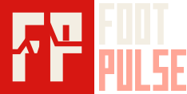
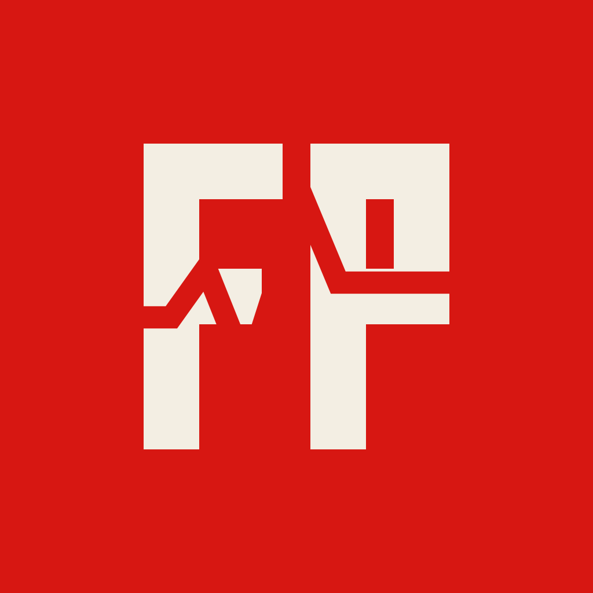
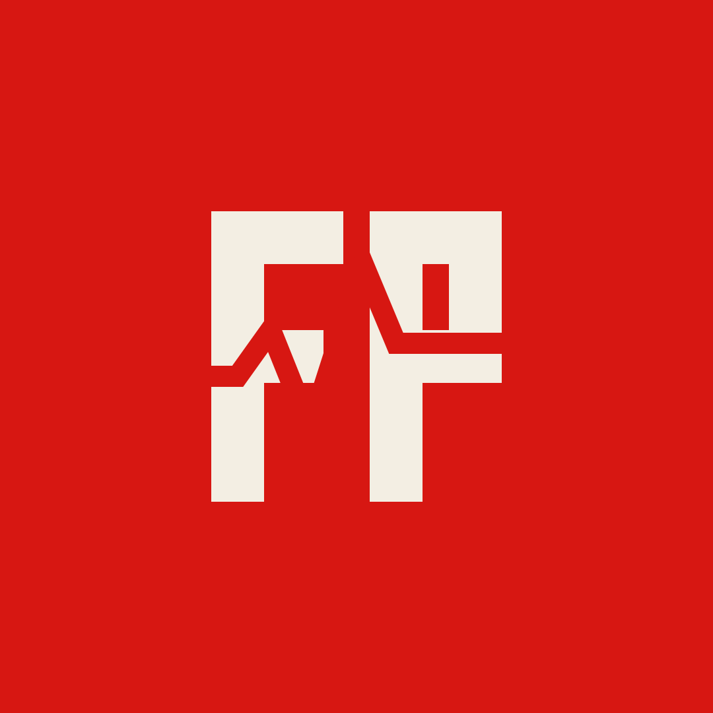
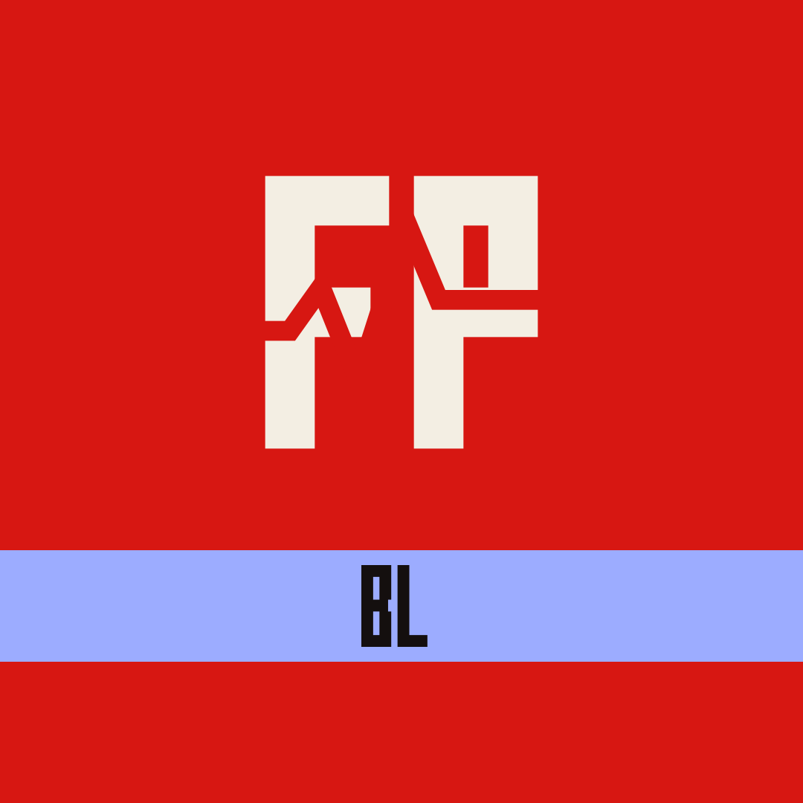

Alle Dateien liegen als SVG in logo/, PNG-Exporte in OneDrive 00 Marke/Designsystem 2026/Logos/.
1. Varianten

Quer auf Dunkel (Standard)Quer auf Hell

Auf Rot: einfarbig weißEinfarbig schwarz (Stempel, Fax, Gravur)Bildmarke allein

App-Icon (Ecken rundet das Betriebssystem)

Profilbild, rund beschnittenFavicon 16 · 32 · 48 px
2. Liga-Konten

Bundesliga (DE)Premier League (EN)Süper Lig (TR)
Gleiches Zeichen, gleiche Farben. Nur das Kürzel und der Liga-Akzent unterscheiden die Konten. Keine Flaggen, keine echten Liga-Logos, keine Liga-Farben.
3. Schutzzone und Mindestgröße
Schutzzone rundherum = x · x = Höhe des Puls-Schnitts (⅙ der Bildmarke)
Element
digital mindestens
Druck
Logo quer
110 px breit
24 mm Breite (quer)
Bildmarke
20 px
6 mm
Profilbild
Zeichen ≤ 60 % des Kreises
–
Mindestgrößen in Originalgröße
4. So nicht
✕ Nicht verzerren✕ Nicht drehen oder kursiv stellen✕ Keine Schatten, kein Glühen✕ Keine fremden Farben✕ Farbiges Logo nie auf Rot: dort nur einfarbig weiß✕ Nicht auf unruhigen Fotos ohne Fläche dahinter